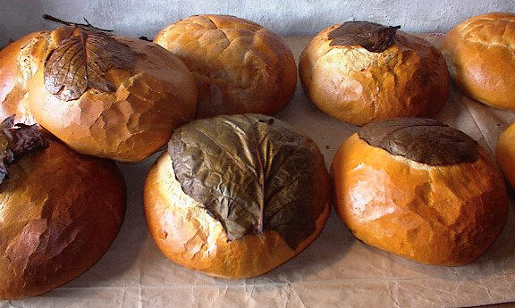

Trenton
Michigan
USA
Le 27 dé mai 1978
Moussieu l'Rédacteu,
Auve lé prix d'siex ch'lîns pour un pain annoncé dans la gâzette du six d'avri, ch'est eune raide bouanne chose qué les pains d'à ch't heu n'sont pon d'la grôsseu des cheins qu'nouos grand' méthes fouângnaient l'temps passé car i' couôt'taient eune petit forteune à chu prix-là. Les jannes d'à ch't heu ouvrithaient l's ièrs s'il' en viyaient d'même. Les grand'méthes les prannaient à la braichie pour en coper eune tranche. J'en mang'geais bein eune tranche couvèrte d'eune couoche de bouan beurre dè couleur d'or, comme nou s'en régalait dans l'temps. Chu pain-là 'tait fèrme et solide et avait du gout. I' n'tait pon comme lé failli mo pain d'acat d'nouos jours souvent copé en finnes tranches à la machnine quand nou l'acate.
Ch'est bein seux qu' les mousses né peuvent pon adguchi lus dents sus la crôte, et les anciens l'éthaient cèrtainement appelé du pain à pouochîns.
En pâlant d'pain v'là tchi m'ramémouaithe tchiques ditons où'est tch'il est mentionné. Par exempl'ye, pour èrmèrtchi tch'i' faut du temps et d'la pâcienche pour tchilyi des pais d'camp, nou dit: Ch'est un long pain! Pour donner eune idée d'la quantité d'mangi tch'i' faut pour nouôrri eune fanmil'ye, nou dit: Siez Ph'lippe, tch'eûdrent eune fanmil'ye de 21, il' avaient tréjous l'pain au fou! Quand eune pèrsonne sé trompe en d'visant nou dit: Ou dit pain quand ch'est gâche! Pour dithe qué tchiquechose né couôte rein ou n'a pon d'valeu, nou dit V'là tchi n'mange pon d'pain!
D'eune pèrsonne enjouée ou enjouardée, nou dit: Ou n'est pon itelle dé pain sé! D'un homme tch'est pièrcheux d'natuthe et tch'a d'la peine à gâgni sa vie, nou dit I' mange le pain d'ouaîsiveté!
Ch'est întérêssant qué chein qu' j'appelons du pain pèrdu en Jèrri est appelé du pain rôti Français (French toast) ichîn en Améthique. La r'chette est dêtaillie dans l'fanmeux Dictionnaithe Jèrriais-Français du Docteu Frank Le MaistreOBE, et ou vaut la peine dé r'corder ichîn car oulle est exactement la meme comme lé French toast d'Améthique et v'là tchi m'fait penser qué v'là tchi fut p't-êt întroduit ichîn par des Jèrriais.
La r'chette
D'battre d's oeufs dans eune bolle, coper des tranches dé pain et les tremper dans l's oeufs battus, pis fricachi dans du beurre.
J'n'ai pon veu grand' chose dé nouvé en arrivant en Jèrri ches dreines années, mais y'a du nouvé à vaie chute fais. Sus san portrait dans la gâzette, la belle grand' crouaix dans Charing Cross pathaît bien pus haut qué jé n'm'attendais d'vaie. J'tais content d'vaie qué san bâptême fut l'sujet d'un service à l'Églyise Pârouaîssiale, et y'a un bieau portrait d'la procession dans l'bel dé l'églyise dans la gâzette.
En arrivent à l'aéroport j'vèrrai lé nouvel abri pour les pâssagièrs tchi viagent par avion. J'm'attendais d'vaie un abri comme en Améthique où'est qué l'pilote manoeuvre sén avion dé manniéthe qué la porte dé l'avion sé cramponne à la porte dé l'abri même, et qué l'pâssagi dêhale dé l'avion directement dans l'abri et l'aéroport. J'criyais qué ch'tait p't-êt' chutte manoeuvre-là tch'avait empêchi cèrtaines compangnies d'avions dé s'associer au projet. Mais d'après l'portrait dans la gâzette i' faut acouo d'scendre dé l'avion à l'înjuthe du temps et marchi deux s'trais pas d'vant y'entrer.
Eune aut' nouvieauté à vaie es'sa les bâtisses de la Cour et d's Êtats dans L'Vièr Marchi auve lus neuves câsaques ou j'dév'thais p't-êt dithe tch'il ont pèrdu lus câsaques et tch'i' pathaîssaient comme des belles tout nues à ch't heu! Et y'a-t-i' eune neuve hôlouoge dans l'cliochi d'l'églyise? Dans san portrait dans la gâzette j'vai un êchaûfaud tchi mène à l' hôlouoge mais i' s'pouôrrait qu' ch'est pour laver la fache!
L'aut' nouvieauté tchi m'întérêsse est les travaux à La Hougue Bie. Enfîn, j'vèrrai tout chenna d'vant longtemps et chein qué j'voudrais vaie pûtôt qu'des nouvieautés est la fîn du vandalisme tchi pathaît vengi la vie en Jèrri d'pis longtemps. Quand nou vait qué des pouôrres annimaux, des j'vaux et d's ânes ont 'té délibéthêment vilannés par des malfaiteurs, la pouôrre âne en point d'en mouothi, il est temps d's'en d'menter séthieusement. Et y'a l'vandalisme tchi dêtruit la propriêté d'autrui.
J'liésais l'aut'jour qué L'Conseil Municipal dè la ville de Chicago ichîn en Améthique à pâssé eune ordonnance pour faithe les pathents payi pour les d'gâts d'lus êfants tchi sont coupabl'yes dé vandalisme, et qué v'là tch'en a empêchi un tas d'pis la pâssâtion d'l'ordonnance. Y'a longtemps qué j'ai r'quémandé qu nou faiche la même chose en Jèrri, et j'sis bein content d'vaie qué jé n'sis pon tout seu d'ma sorte!
George d'La Forge
Viyiz étout: